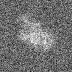
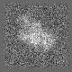
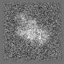
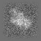

最小
最大
平均値
標準偏差
標準誤差
-44.768
93.0617
9.17013
14.9189
0.186486
| オプション | 必須項目/選択項目 | 説明 | デフォルト |
|---|---|---|---|
| -i | 必須 | 入力ファイル設定 | NULL |
| -o | 必須 | 出力ファイル設定 | NULL |
| -W | 選択 | 窓関数のサイズを設定 ※数値は1以下にしなければ正しく処理されない |
(Wx WxMax Wy WyMax)→(0.1 0 0.1 0) |
| -m | 選択 | モード | 0 |
| -h | 選択 | ヘルプを表示 |
| モード | 説明 |
|---|---|
| 0 | 90%が窓関数 |
| 1 | オプション-WのWyを使用 |
| 2 | オプション-WのWx,WxMax,Wy,WyMaxを使用 |
|  | 最小 |
-64.5759 |
|  | 最小 |
-64.5759 |
最小 |
-54.44 |
最小 |
-44.768 |
|  | 最小 |
-64.5759 |
最小 |
-54.44 |
|
最小 |
-44.768 |
|  | 最小 |
-64.5759 |